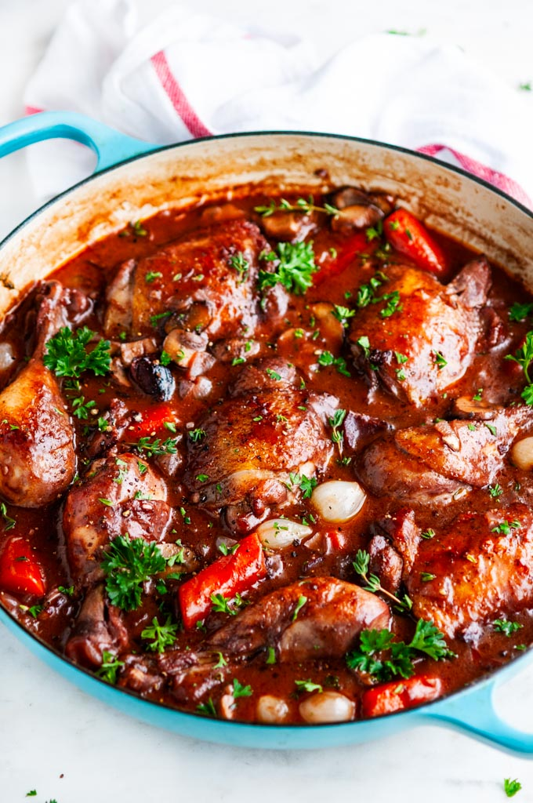

Coq au Vin

Description
Chicken in Red Wine with Onions, Mushrooms, and Bacon
This popular dish may be called coq au Chambertin, coq au riesling, or coq au whatever wine you use for its cooking. It is made with
either white or red wine but the red is more characteristic. In France it is usually accompanied only by parsley potatoes; buttered green peas could be
included if you wish a green vegetable. Serve with it a young, full-bodied red Burgundy, Beaujolais, or Cotes du Rhone.
For 4 to 6 people
Ingredients
- A 3- to 4-oz. chunk of lean bacon
- 2 oz. butter
- 2 1/2 to 3 lbs. cut-up frying chicken
- 1/2 tsb salt
- 1/8 tsp pepper
- 1/8 pt. cognac
- 1 1/4 pts. young, full-bodied red wine such as Burgundy, Beaujolais, Cotes du Rhone, or Chianti
- 1/2 to 3/4 pt. brown chick stock, brown stock, or beef bouillon
- 1 dsp tomato paste
- 2 cloves mashed garlic
- 1/4 tsp thyme
- 1 bay leaf
- 12 to 24 brown-braised onions
- 1/2 lb, sauteed mushrooms
- 1 oz. flour
- Sprigs of fresh parsley
Steps
- Remove the rind and cut the bacon into lardons (rectangles 1/4 inch across and 1 inch long). Simmer for 10 minutes in 2 quarts of water. Rinse in
cold water. Dry
- Sate the bacon slowly in hot butter until it is very lightly browned. Remove to a side dish.